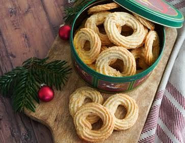

Christmas Vanila Wreath Cookies
A buttery Christmas cookie fit for small hands. Like all food blogs with a pinch of self-respect, requires a few pages long scrollable content of how much my family loves these cookies, how much these cookies will improve your overall lifestyle and even how well suited these buttery cookies are fit for small hand Santas. However, we will suffice with this paragraph and the next.
Buttery cookies are great. Easy to make, easy to bake and easy to eat. Most importantly, remember to set out a plate of newly baked vanilla wreath cookies for Santa Claus. Please be aware, the butteriness from the cookies can stain old Santa Claus suits. We do supply fresh new Santa Claus suits for adults of a more delicate statue below 149 cm. Even small hand are in need of big plates of cookies.
Christmas Vanila Wreath Cookies Tools
- Pastry bag
- Star nozzle
- Bowl
Ingredients
- 70 cookies for small hands
- Dough
- 200 g softened butter
- 1/2 vanilla pod
- 180 g sugar
- 1 large egg
- 250 g wheat flour
- 75 g fine almond flour
Preheat the oven to 200oC.
Home made vanilla flavoured sugar
With a small pairing knife, split the vanilla pod lengthwise and scrape out the seeds. Mash the vanilla grains together with a little sugar to separate the grains and ad to a bowl.
Dough
To bowl with your home made vanilla flavoured sugar, add the soften butter. Beat in the egg. Mix wheat flour and almond flour well. Be careful to not knead the dough. Put the dough in a fabric lined piping bag with a star nozzle. Pipe 4 cm in diameter wreaths onto a parchment linear baking sheet, leaving a few centimetres between each cookie to prevent them from floating together during baking.
Baking
Bake at 200oC for 7-9 minutes, until the have lightly golden edges. Let the cookies cool on a baking rack and store them in a tightly sealed container. Perfect to serve to Santa Claus.
Want to look the part while baking? Visit our main page to browse our premium collection of Santa Claus costumes and start your holiday transformation today!